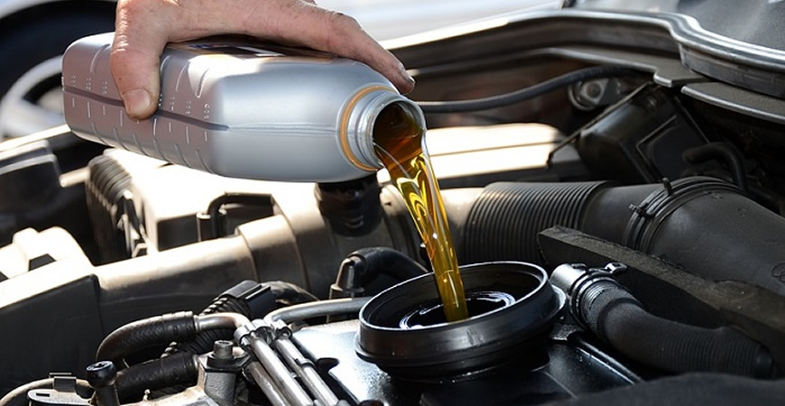
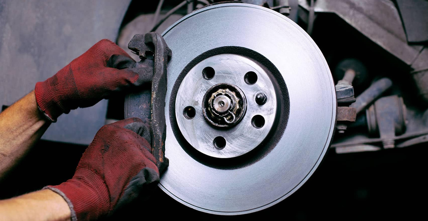
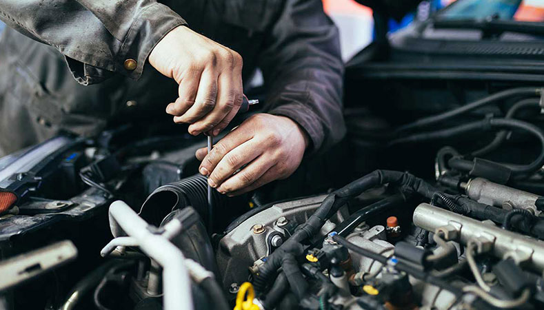

En Çok Verilen Hizmetlerimiz

Yağ değişim:
Aracınızın Yağ filtresi, Hava filtresi ve mazot filtreleri sökülüp yerine sıfır filtreler takılır. Aracınızda olan eski yağ boşaltılıp yenisi doldurulur yağ seçiminize göre.

Balata Değişimi:
Aracınızın hangi balataların bittiği tespit edilip bize ait olan parça dükkanından balata seçimi yapabilirsiniz bütçenize göre. Tamamen Sizin isteğinize göre. Bizi arayıp sorarak bu konuda bilgi alabilirsiniz

Motor Arızası Bulma:
Aracınızda garip sesler geliyor ise ustalarımızın tecrübesi sayesinde sorun çözülecektir eğer ki elektronik bir arıza var ise Arıza Bulma Cihazlarımız Mevcuttur.
Peki Biz Ne Yapıyoruz ?
Özçiçek Oto Tamir İşletmesi olarak, araç sahiplerinin güvenle sürüş yapabilmesi için gereken her türlü bakım
ve onarım hizmetini sunuyoruz. Araçlarınız, bizim için daha fazlasıdır; onlar sizin hayatınızın bir parçası,
özgürlüğünüzün ifadesi ve yolculuklarınızın ta kendisidir. Bu bilinçle, araçlarınıza özenle yaklaşarak, en
son teknoloji ve uzmanlığı bir araya getirerek, onların en iyi hallerini korumak ve geliştirmek için
çalışıyoruz.
Özçiçek Oto Tamir İşletmesi olarak, aşağıdaki hizmetleri sunmaktayız;
Tamir ve Bakım: Araçlarınızın ihtiyaç duyduğu düzenli bakım ve acil tamir işlemlerini en üst kalitede
gerçekleştiriyoruz. Motor, şanzıman, fren sistemi, süspansiyon ve daha birçok mekanik ve elektronik
bileşen üzerinde uzmanız.
Elektronik Hizmetler: Araçların günümüzdeki karmaşık elektronik sistemleri konusunda uzman ekibimiz, her
türlü elektriksel ve elektronik arızayı teşhis edebilir ve çözebilir.
Lastik ve Jant Bakımı: Lastik değişimi, rot-balans ayarı ve jant tamiri gibi lastik ve jant bakım
hizmetleri sunarak, sürüş güvenliğinizi artırmanıza yardımcı oluyoruz.
Boya ve Kaporta İşleri: Kazalardan kaynaklanan hasarları düzelterek aracınızın dış görünümünü yeniden
kazanmasını sağlıyoruz. Profesyonel boya ve kaporta işleriyle aracınızı ilk günkü haline döndürüyoruz.
Yolculuğunuzda bizimle birlikte olmanızı dileriz.
Her araç sahibinin ihtiyaçları farklıdır ve her aracın bakım gereksinimleri benzersizdir. Biz, her
müşterimizin taleplerini özenle dinleyerek, en uygun ve etkili çözümleri sunmayı taahhüt ediyoruz.
Özçiçek Oto Tamir İşletmesi olarak, aracınızın en iyi haliyle kalmasını sağlamak için buradayız.
Saygılarımızla,
Özçiçek Oto Tamir